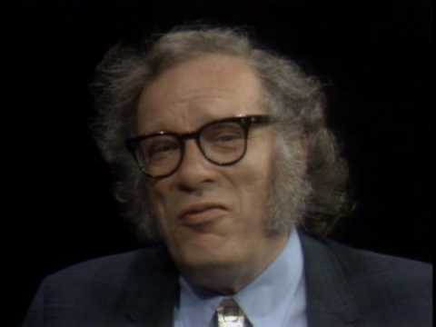
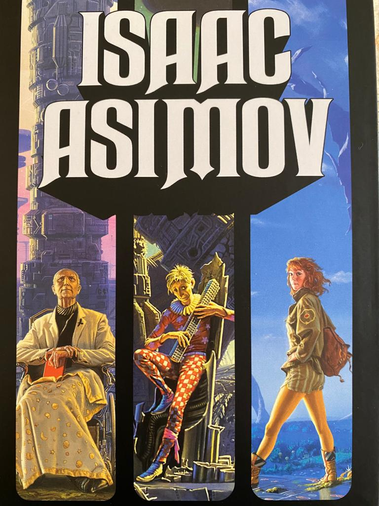

<div class="jumbotron">
    <h1 class="display-4">Isaac Asimov</h1>
    
    <p class="lead">
        Isaac Asimov é um escritor 
        russo, cuja sua principal obra 
        foi a saga da Fundação
    </p>
</div>


